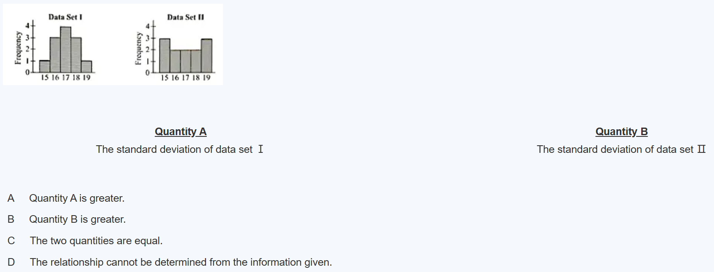

GRE 数学主要考察学生以下三种能力：
基本数学技能
对基本数学概念的理解
定量推理，建模以及利用定量法解决问题的能力
GRE 数学考核的知识点:
算术(Arithmetic)
代数 (Algebra)
几何(Geometry)
数据分析(Data Analysis)
GRE 数学基本注意事项:
所有使用的数字都是实数
除非特殊说明，所有图示都应认为是在同一平面内
几何图形，如线形、圆形、三角形及四边形等，并不一定按比例绘制。也就是说，长度和角度之类的数量与它们在图中显示的可能并不一致。但是，考生要知道，显示为直线的线条确实是直线，线上的点也按顺序显示，并且所有的几何对象都处于所显示的相对位置。对于那些与几何图形相关的问题，考生应该基于几何推理得到答案，而不是凭目测估计、比较数量或者通过度量来得出
坐标系，例如平面直角坐标系(xy-plane)和实数线(中国习惯称为数轴)(number line)，都是按比例绘制的。因此，考生可以通过目测或者度量来对这些图示进行阅读、估算或比较数量
图形数据显示，例如条形图、圆形图和线性图，都是按比例绘制的。因此，考生可以通过目测或度量来对这些图示进行阅读、估算或比较数量
推荐的训练网址：https://gre.kmf.com/practise/qr
带有【Medium】标签的Section ，即对应实际考试中的第一个数学Section，包含12道题，难度系数1、2、3、4、5的题均有。推荐总做题时间控制在21分钟内。
带有【Hard】标签的Section ，即对应实际考试中的第二个数学自适应Hard Section，包含15道题，主要都是难度系数3、4、5的题。推荐总做题时间控制在26分钟内。
| 常用数学表达 | 语言表达 |
|---|---|
| A = B | A is B |
| A = B | A is equal to B |
| A = B | A is the same as B |
| A = B | the result is |
| A = B | A yields B |
| A = B | A gives B |
| A > B | A is greater than B |
| A ≥ B | A is greater than or equal to B |
| A < B | A is less than B |
| A ≤ B | A is less than or equal to B |
| A + B | the sum of A and B |
| A + B | the total of A and B |
| A + B | A added to B |
| A + B | A increased by B |
| A - B | A minus B |
| A - B | A less B |
| A - B | the difference of A and B |
| A - B | from A subtract B |
| A - B | A take away B |
| A - B | A decreased by B |
| A - B | A diminished by B |
| A - B | B is subtracted from A |
| A × B | A multiplied by B |
| A × B | the product of A and B |
| A÷B | A divided by B |
| A÷B | the quotient of A and B |
| Factors and Divisors: A×B=C | A and B are factors of C |
| Factors and Divisors: A×B=C | A and B are divisors of C |
| Factors and Divisors: A×B=C | C is divisible by A and by B |
| Factors and Divisors: A×B=C | C is a multiple of A and of B |
| A=n*B | A n times as many as B |
| A=n*B | n times A as many as B |
| A=n*B | n times as many A as B |
| AB | A to the B |
| AB | A to the power of B |
| 定义 | define |
| 用A表示B | Let A denote B |
| 用x表示y | y in terms of x |
| 表达式 | expression |
| 假设 | suppose |
| 使得 | such that |
| 满足方程 | satisfy the equation |
| 最小值 | least possible value |
| 最大值 | greatest possible value |
| 不同的 | distinct |
| 连续的 | consecutive/successive/in a row |
| 实数 | real number |
| 有理数 | rational number |
| 无理数 | irrational number |
| 整数 | integer |
| 分数 | fraction |
| 有限小数 | terminating decimal |
| 无限循环小数 | repeating decimal |
| 无限不循环小数 | non-repeating decimal |
| 正数 | positive number |
| 负数 | negative number |
| 绝对值 | absolute value |
| 自然数 | natural number |
| 奇数 | odd number/integer |
| 偶数 | even number/integer |
| 质数 | prime number |
| 合数 | composite number |
| 因数 | factor/divisor |
| 公因数 | common factor/divisor |
| 最大公因数 | greatest common divisor |
| 质因数 | prime factor |
| 质因分解 | prime factorization |
| 倍数 | multiple |
| 公倍数 | common multiple |
| 最小公倍数 | least common multiple |
| 除数 | divisor |
| 商 | quotient |
| 余数 | remainder |
| 可被整除 | divisible |
| 分子 | numerator |
| 分母 | denominator |
| 公分母 | common denominator |
| 倒数 | reciprocal |
| 带分数 | mixed number |
| 比率 | ratio |
| 成正比 | directly proportional to |
| 成反比 | inversely proportional to |
| 指数 | exponent |
| 底 | base |
| 幂 | power |
| 平方 | square |
| 立方 | cube |
| 平方根 | square root |
| 立方根 | cube root |
| 四次方根 | fourth root |
| 阶乘 | factorial |
| 数位 | digit |
| 小数点 | decimal point |
| 十位 | tens digit |
| 个位 | units/ones digit |
| 十分位 | tenth digit |
| 两位数字 | two digits |
| 四舍五入到 | rounded to the nearest… |
| 区间 | interval |
| 开区间 | exclusive |
| 闭区间 | inclusive |
| 变量 | variable |
| 常数 | constant |
| 项 | term |
| 同类项系数 | like/similar terms coefficient |
| 方程 | equation |
| 解 | solution |
| 函数 | function |
| 线性函数 | linear function |
| 二次函数 | quadratic function |
| 定义域 | domain |
| 值域 | range |
| 直角坐标系/x-y平面 | coordinate system/x-y plane |
| 原点 | origin |
| 象限 | quadrant |
| 斜率 | slope(rise over run) |
| 截距 | intercept |
| P点关于x轴的对称点 | reflection of P about x-axis |
| （图像）拉伸 | stretched |
| （图像）压缩 | shrunk |
| 本金 | principal |
| 利息 | interest |
| 利率 | interest rate |
| 单利 | simple interest |
| 复利 | compound interest |
| 成本 | cost |
| 利润 | margin/profit |
| 收益 | revenue |
| 零售价 | retail price |
| 标价 | list price |
| 购买价 | purchasing price |
| 销售价 | sale price |
| 打折 | discount |
| 涨价 | markup |
| 预付款/定金 | down payment/deposit |
| 折旧 | depression |
| 人均 | per capita |
| 平局 | tie |
| 点 | point |
| （点/线）在…上 | lie on |
| 中点 | mid-point |
| 线 | line |
| 线段 | segment |
| 相交 | cross/intersect |
| 平行 | parallel |
| 垂直 | perpendicular |
| 面 | plane |
| 角度 | degree |
| 锐角 | acute angle |
| 直角 | right angle |
| 钝角 | obtuse angle |
| 角平分线 | angle bisector |
| 对顶角 | opposite angle |
| 多边形 | polygon |
| 顶点 | vertex/vertices |
| 边 | side |
| 正多边形 | regular polygon |
| 五边形 | pentagon |
| 六边形 | hexagon |
| 七边形 | heptagon |
| 八边形 | octagon |
| 九边形 | enneagon/nonagon |
| 十边形 | decagon |
| 三角形 | triangle |
| 等腰三角形 | isosceles triangle |
| 等边三角形 | equilateral triangle |
| 直角三角形 | right triangle |
| 直角边 | leg |
| 斜边 | hypotenuse |
| 勾股定理 | Pythagorean Theorem |
| 四边形 | quadrilateral |
| 平行四边形 | parallelogram |
| 菱形 | rhombus |
| 梯形 | trapezoid |
| 长方形 | rectangle |
| 正方形 | square |
| 对角线 | diagonal |
| 全等 | congruent |
| 相似 | similar |
| 面积 | area |
| 周长 | perimeter |
| 圆 | circle |
| 圆心 | center |
| 半径 | radius |
| 直径 | diameter |
| 弦 | chord |
| 弧 | arc |
| 劣弧 | minor arc |
| 优弧 | major arc |
| 圆周长 | circumference |
| 扇形 | sector |
| 同心圆 | concentric circles |
| 相切 | tangent |
| 内接 | inscribe |
| 外接 | circumscribe |
| 顺时针 | clockwise |
| 逆时针 | counterclockwise |
| 长方体 | rectangular solid |
| 立方体 | cube |
| 圆柱 | circular cylinder |
| 圆锥 | cone |
| 球 | sphere |
| 棱 | edge |
| 面 | face |
| 长 | length |
| 宽 | width |
| 高 | height |
| 表面积 | surface area |
| 体积 | volume |
| 统计 | statistics |
| 频率 | frequency / count |
| 相对频率 | relative frequency |
| 条形图 | bar graph |
| 分段的条形图 | segmented bar graph |
| 扇区 | sector |
| 直方图/柱状图 | histogram |
| 箱线图 | boxplots |
| 单变量的 | univariate |
| 双变量的 | bivariate |
| 趋势，走向 | trend |
| 集中趋势 | central tendency |
| 算术平均值 | arithmetic mean/mean |
| 中位数 | median |
| 众数 | mode |
| 最大值 | maximum |
| 最小值 | minimum |
| 极差 | range |
| 加权平均数 | weighted mean |
| 四分位数 | quartile |
| 百分位数 | percentile |
| 四分位差 | interquartile range |
| 异常值 | outlier |
| 离差 | dispersion |
| 标准差 | standard deviation |
| 样本标准差 | sample standard deviation |
| 集合 | set |
| 交集 | intersection |
| 并集 | union |
| 容斥原理 | disjoint/ mutually exclusive inclusion-exclusion principle |
| 组合 | combination |
| 排列 | permutation |
| 概率 | probability/possibility |
| 概率试验 | probability experiment |
| 随机试验 | random experiment |
| 样本空间 | sample space |
| 事件 | event |
| 等可能 | equally likely |
| 随机抽样 | random selection |
| 相互独立的 | independent |
| 随机变量 | random variable |
| 离散型随机变量 | discrete random variable |
| 连续随机变量 | continuous random variable |
| 期望 | expected value/mean of random variable x |
| 分布曲线 | distribution curve |
| 密度曲线 | density curve |
| 频率曲线 | frequency curve |
| 概率分布 | probability distribution |
| 近似正态分布 | approximately normally distributed |
| 标准正态分布 | standard normal distribution |
| 连续概率分布 | continuous probability distribution |
单利是指利息仅计算在原始本金上的情形。在单利计算方式下，利息不会产生额外的利息。计算公式是：
举例来说，如果您存入银行10000元，年利率是5%，存期是3年，那么三年的利息就是：
所以三年后，您将得到：
复利是指利息不仅计算在原始本金上，还包括之前期间累积下来的利息。换句话说，利息会产生利息。复利的计算公式是：
使用同样的例子，如果银行将利息以复利形式计算，那么三年后的金额将是：
经过计算，得到的总金额将会比单利计算的结果要高。
https://gre.kmf.com/practice/result/171496256416077082?sid=7004
【参考答案】选A
【参考解析】
当x与y无限接近重合与纵向直径时，x+y才会接近直径，(x+y)/2才会接近半径
但是其他情况下x+y一定小于直径（直径是圆里的最长弦），那么(x+y)/2持续小于半径
总之，QA一定大于QB
OG上说“Point, lines, angles that are shown distinct are indeed distinct”
这是否是一种可行的解释？
【参考解析】根据题目给出通项公式，列举得a2=8, a3=0, a4=2, a5=−6, a6=−4, a7=−12
对于数列问题，一定要明确第一项是什么。。。
一个规律，3*（-8+2）+a1=-12
https://gre.kmf.com/practice/result/171496402634197764?sid=7003
How many positive integers less than or equal to 603 are multiples of 2 or multiples of 3 or both?
To find the number of positive integers less than or equal to 603 that are multiples of 2 or multiples of 3, or both, we use the principle of inclusion-exclusion.
First, we count the multiples of 2 and the multiples of 3 separately. Then, we subtract the count of multiples of both 2 and 3 (which are multiples of 6) to avoid double counting.
Count of multiples of 2: (
Count of multiples of 3: (
Count of multiples of both 2 and 3 (multiples of 6): (
The total count is the sum of the first two counts minus the third count. Let's calculate this.
x1# Calculating the number of multiples of 2, 3, and 6 up to 6032multiples_of_2 = 603 // 23multiples_of_3 = 603 // 34multiples_of_6 = 603 // 65
6# Applying the principle of inclusion-exclusion7total_multiples = multiples_of_2 + multiples_of_3 - multiples_of_68total_multiplesThe answer is 402.
The number of positive integers less than or equal to 603 that are multiples of 2 or multiples of 3, or both, is
https://gre.kmf.com/practice/result/171497092138729691?sid=7002
【参考答案】选B
【参考解析】
取任意三个端点连成三角形，分别在三条边上作中垂线，即可找到一个外心（外接圆圆心）。但是，由于两条线段相互bisect等分，所以四个方向找到的四个外心一定重合于交点，因此只能画出来一个外接圆，同时通过四个端点。

【参考答案】选B
注意是频率直方图
此外，也可以积累一个性质：直方图越凹，标准差越大；直方图越凸，标准差越小。
数据越往中间靠拢，标准差越小，说明大多数的数据都分布得比较近。 数据越往两边发散，标准差越大，说明大多数的数据之间都相差不少。
Which student wrote the longest articles as measured by the average (arithmetic mean) number of words per article?
A A
B B
C C
D F
E G
【参考答案】选A
【参考解析】从表格中来看平均字数大于1 千的只有A和C，A平均字数为6.4÷5=1.28，B的平均数字为9.6÷8=1.2，因此A同学的平均字数最多。不要想当然，该算的地方一定要算清楚，不要自以为是，粗心大意。
Mr. Thomas gave a chemistry test to 25 students and assigned each student a score. Of the 25 students, 12 students received scores that were greater than 80.
Which of the following statements individually provide(s) sufficient additional information to determine the median of the 25 scores?
Indicate all such statements.
A The average (arithmetic mean) of the 25 scores was 80
B One students received a score of 80
C Twelve students received scores that were less than or equal to 75
【参考答案】选B
【参考解析】A选项，均值对于中位数的判断没有作用；B选项，12个都是大于80的，那么80肯定就中位数了；C选项，12个小于等于75，仍然不知道第13个是多少，无法确定中位数。
B选项是个坑，我掉进去了。
https://gre.kmf.com/practice/result/171497434676678314?sid=7001
If
Indicate all such digits.
A 1
B 3
C 5
D 7
E 9
【参考答案】选BDE
【参考解析】
方法一：2n为偶数，个位可能是0、2、4、6、8，那么
方法二：考查个位数找规律。n为正整数，那么n的平方的个位可以是1、4、5、6、9、0，于是
The top surface of a certain 1-inch-thick oak board is 8 inches wide and has an area of 960 square inches. What is the price of this board? (1 foot=12 inches)
A $26.40
B $29.00
C $32.00
D $34.80
E $40.00
正确答案： C
1foot（12inch）长，8inch宽的oak board，单价3.2，面积960，长度120inch，那么就是10个单位，价格3.2*10=32。
要把这个东西想象成木板，而不是长方体，一英尺厚度可以忽略不计，an area of 960 square inches 指的是木板的覆盖面积
方法一：直接画图分析
选 B。
方法二：代数式比大小
第一步：相减，不容易化解，无法跟0比大小
第二步：QA、QB均大于0，可以QA/QB，对比商与1的关系
因为y > 1001 > 1000=
那么，
The table above shows the number of points scored by a team in each of 48 games. What is the 3rd quartile of the distribution of the data?
方法一：48个数据，中位数3，前后各24个数据，后24个数的中位数4，因此第三四分位数为4；
方法二：48个数据，48 *（3/4）=36，所以第三四分位数是第36个数（即4）和第37个数（也是4）的平均数，也就是4。
A group of 10 couples plans to rent bayside summer houses on Island X from Realtor M for a certain week. The total rental cost for the houses will be evenly distributed among the 10 couples, and each couple will have their own bedroom. If Realtor M has at least three bayside summer houses of each type available that week, what is the least possible rental cost per couple?
A $400
B $300
C $240
D $220
E $190
有 10 对夫妇计划在某一周内向房地产经纪人 M 租 X 岛的海湾避暑别墅。房子的总租金将平均分配给这 10 对夫妇，每对夫妇都有自己的卧室。如果 M 房东在该周至少有三套各类型的海湾避暑别墅，那么每对夫妇的最低租金是多少？
租三个四卧室是2400
租两个四卧室加上一个两室是2200
通过凑数的方法判断2200应该是最低的了，2200/10=220，所以正确答案是：D
regular polygons 的意思是 正多边形
【参考答案】选C
【参考解析】P是正多边形有n个相等的内角，Q是正多边形有n+1个内角。合并起来，一共有n+n+1=2n+1个内角，求这2n+1个内角的度数从小到大排列的中位数度数是多少。
总共2n+1项，中位数是从小到大排列第n+1项，n多边形的内角，小于n+1多边形的内角，所以从小到大排列第n+1项，应该是n+1多边形的内角
QA=从小到大排列第n+1个内角度数=n+1边形的每个内角=(n+1-2)180/(n+1)=QB
As a result of a chemical reaction between compounds A and B. 1/4 of each compound was transformed into an equal amount of the other compound, while the remaining 3/4 of each compound was not transformed. If the amount of B was initially 4 times the amount of A. what was the ratio of the amount of A to the amount of B after the reaction?
A 1 to 3
B 3 to 4
C 4 to 7
D 7 to 13
E 7 to 16
【参考答案】选D
【参考解析】设反应前A为x, 反应前B为4x，反应过程中四分之一的A转换成了B，说明A减少了1/4 x, B增加了1/4 x；而同时， 1/4的B转换成了A，说明B减少了1/4· 4x = x, 则A增加了x; 那么反应后A为：x – 1/4 x + x = 7/4x, 反应后B为：4x + 1/4 x – x = 13/4x， A : B = 7/4x: 13/4x = 7 : 13。
"the other" 和 "another" 是英语中常用的代词，它们有以下的区别：
"The other" 指的是两个特定选项中的第二个，暗示只有两个选项或两个中的另一个。例如，如果你有一个苹果和一个橙子，你可以说 "I'll take the other one" 来表示你想要橙子。
"Another" 指的是除了已经提到的选项之外的任何一个，暗示有三个或更多的选项。例如，如果你有一篮子水果，你已经拿了一个苹果，然后你可以说 "Can I have another one?" 来表示你想再拿一个水果，而这个水果不特指是哪一个。 总结来说，当你只有两个选项时，用 "the other"；当有三个或更多的选项时，用 "another"。
机经，就是最新GRE真题，是通过考生回忆整理而来的。 只有通过做机经题，才能够真实了解近期GRE考情，感受当前考试实际难度，针对性查漏补缺，甚至未来自己参加考试时，遇到同考点题、或者机经原题。
https://gre.kmf.com/practice/result/171500356620984086?sid=7317
A bus traveled m miles in h hours at an average speed of r miles per hour. If the number of hours traveled by the bus had been 20 percent greater and the average speed had been 20 percent less, then the distance traveled by the bus would have been what percent less?
_%
【参考答案】填4
【参考解析】m=hr, 1.2h*0.8r=0.98hr=0.96m, (m-0.96m)/m=4%
仔细审题非常重要，我填了个96。。。
主要也是自己当时在第一个题卡住了一小会，突然想到了解题思路，算出来也没仔细看问题，直接就填进去了，导致了错误。
The table above summarizes customer satisfaction ratings for two banks, where each rating is an integer from 1 to 10. Which of the following statements must be true?
Indicate all such statements.
A For Bank I, if a rating is within 0.5 standard deviation of the mean rating, then the rating is 7.
B For Bank II, if a rating is within 0.4 standard deviation of the mean rating, then the rating is 6
C The sum of all the ratings for Bank I is less than the sum of all the ratings for Bank II.
【参考答案】选B
【参考解析】
A选项，7.4-1.6*0.5~7.4+1.6*0.5，也即6.6~8.2，可以取7或8，错误
B选项，5.9-1.8*0.4~5.9+1.8*0.4，也即5.18~6.62，只可以取6，正确
C选项，155*7.4=1147, 160*5.9=944，1147>944，错误
一开始没看懂题目在问什么。
0.5 standard deviation 的意思是 standard deviation 一半，也就是0.5倍的standard deviation